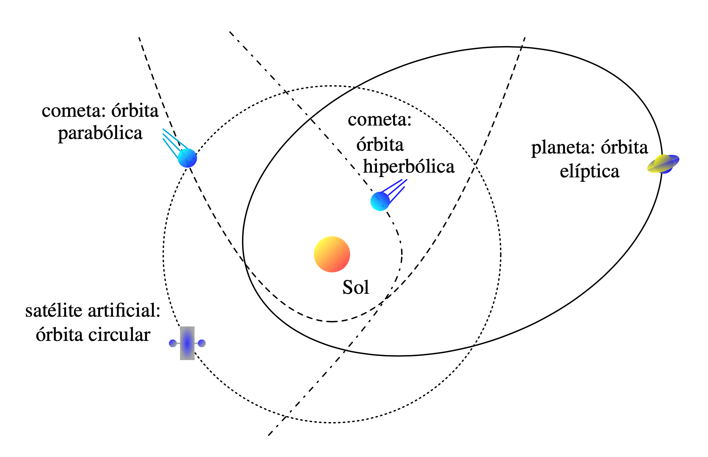
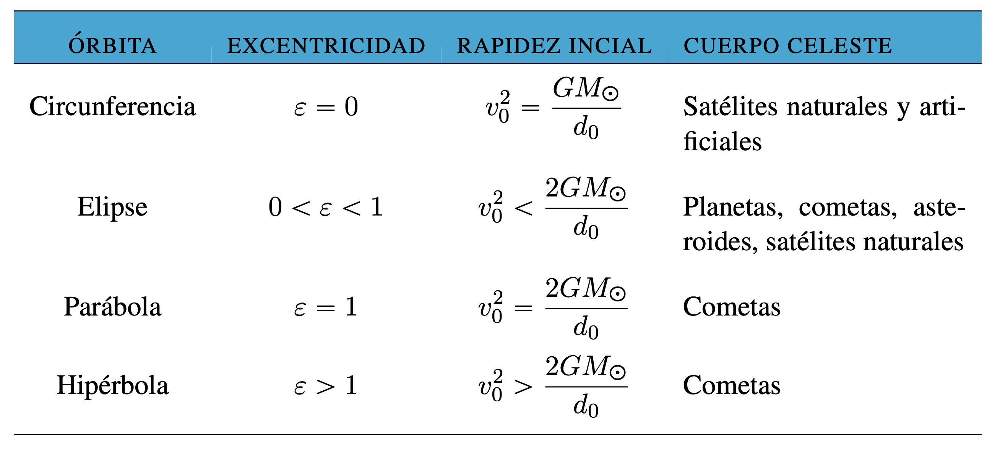

Las órbitas que siguen los cuerpos celestes alrededor del Sol pueden ser una curva cerrada: circunferencia o elıpse, o una curva abierta: una parábola o una hipérbola, como se muestra en la Figura, con las propiedades que se resumen en la Tabla.
Figura: Geometría de las órbitas de los cuerpos celestes alrededor del Sol
Tabla: Propiedades de las órbitas de los cuerpos celestes.